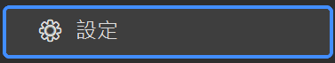

第一部分 — 首次設定
首次設定
1
選擇遊戲螢幕
在右上角的「遊戲螢幕」選單選擇遊戲所在的螢幕，並確認遊戲以無邊框或視窗模式執行。
從「遊戲螢幕」下拉選單選擇 Forza 所在的螢幕。
2
樣本已內建，免擷取
競速、購買車輛、自動轉輪的偵測樣本皆已內建，並會自動依你的解析度縮放，開箱即用，無需任何擷取。
3
外觀與語言
在「設定」中可切換語言（繁中／English）、主題與介面縮放，並重新綁定快捷鍵（預設 F9 啟停、F12 回報、F10 浮層）。

點選側邊欄底部的「設定」開啟外觀、語言與快捷鍵選項。
4
唯一例外：解鎖轉輪需設定格狀圖
只有「解鎖轉輪」需要設定：在該功能面板的解鎖路徑格狀圖中勾選要解鎖的熟練度節點，並用車庫格選擇要處理的車輛範圍（起始列、中間整欄數、結束列）。無需擷取節點或樣本，詳見第三部分。
5
準備就緒
其餘功能無需任何設定。切換到想用的功能，按 ▶ 開始或 F9 即可。